AVALANCHE
| Photo |
Name |
Number |
Position |
Shot |
Height |
Weight |
Birthday |
Hometown |
| 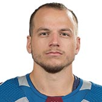 |
Sven Andrighetto |
10 |
RW |
L |
5' 10" |
188 |
Mar 21, 1993 |
Zurich, CHE |
| 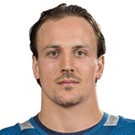 |
Gabriel Bourque |
57 |
LW |
L |
5' 10" |
206 |
Sep 23, 1990 |
Rimouski, QC, CAN |
|
Matt Calvert |
11 |
LW |
L |
5' 11" |
186 |
Dec 24, 1989 |
Brandon, MB, CAN |
|
J.T. Compher |
37 |
LW |
R |
6' 0" |
193 |
Apr 8, 1995 |
Northbrook, IL, USA |
| 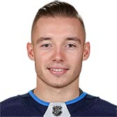 |
Marko Dano |
56 |
C |
L |
5' 11" |
212 |
Nov 30, 1994 |
Eisenstadt, AUT |
| 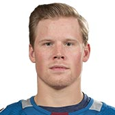 |
Sheldon Dries |
15 |
C |
L |
5' 9" |
185 |
Apr 23, 1994 |
Macomb Township, WI, USA |
|
Tyson Jost |
17 |
C |
L |
5' 11" |
191 |
Mar 14, 1998 |
St. Albert, AB, CAN |
| 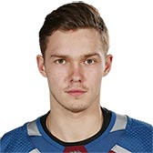 |
Vladislav Kamenev |
91 |
C |
L |
6' 2" |
194 |
Aug 12, 1996 |
Orsk, RUS |
| 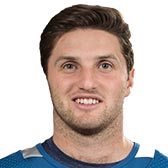 |
Alexander Kerfoot |
13 |
C |
L |
5' 10" |
175 |
Aug 11, 1994 |
Vancouver, BC, CAN |
| 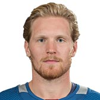 |
Gabriel Landeskog |
92 |
LW |
L |
6' 1" |
215 |
Nov 23, 1992 |
Stockholm, SWE |
| 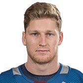 |
Nathan MacKinnon |
29 |
C |
R |
6' 0" |
205 |
Sep 1, 1995 |
Halifax, NS, CAN |
| 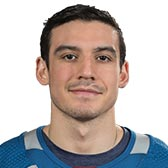 |
Matt Nieto |
83 |
LW |
L |
5' 11" |
190 |
Nov 5, 1992 |
Long Beach, CA, USA |
| 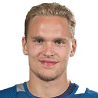 |
Mikko Rantanen |
96 |
RW |
L |
6' 4" |
215 |
Oct 29, 1996 |
Nousiainen, FIN |
| 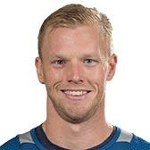 |
Carl Soderberg |
34 |
C |
L |
6' 3" |
210 |
Oct 12, 1985 |
Malmö, SWE |
| 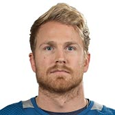 |
Colin Wilson |
22 |
C |
L |
6' 1" |
221 |
Oct 20, 1989 |
Greenwich, CT, USA |
| Photo |
Name |
Number |
Shot |
Height |
Weight |
Birthday |
Hometown |
|
Mark Barberio |
44 |
L |
6' 1" |
200 |
Mar 23, 1990 |
Montreal, QC, CAN |
|
Tyson Barrie |
4 |
R |
5' 10" |
190 |
Jul 26, 1991 |
Victoria, BC, CAN |
|
Ian Cole |
28 |
L |
6' 1" |
219 |
Feb 21, 1989 |
Ann Arbor, MI, USA |
| 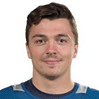 |
Samuel Girard |
49 |
L |
5' 10" |
162 |
May 12, 1998 |
Roberval, QC, CAN |
| 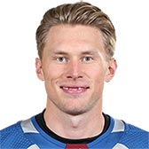 |
Erik Johnson |
6 |
R |
6' 4" |
225 |
Mar 21, 1988 |
Bloomington, MN, USA |
| 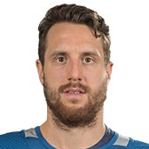 |
Patrik Nemeth |
12 |
L |
6' 3" |
219 |
Feb 8, 1992 |
Stockholm, SWE |
|
Conor Timmins |
18 |
R |
6' 2" |
184 |
Sep 18, 1998 |
St. Catharines, ON, CAN |
| 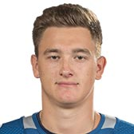 |
Nikita Zadorov |
16 |
L |
6' 5" |
230 |
Apr 16, 1995 |
Moscow, RUS |
| Photo |
Name |
Number |
Height |
Weight |
Birthday |
Hometown |
|
Philipp Grubauer |
31 |
6' 1" |
191 |
Nov 25, 1991 |
Rosenheim, DEU |
|
Semyon Varlamov |
1 |
6' 2" |
205 |
Apr 27, 1988 |
Samara, RUS |